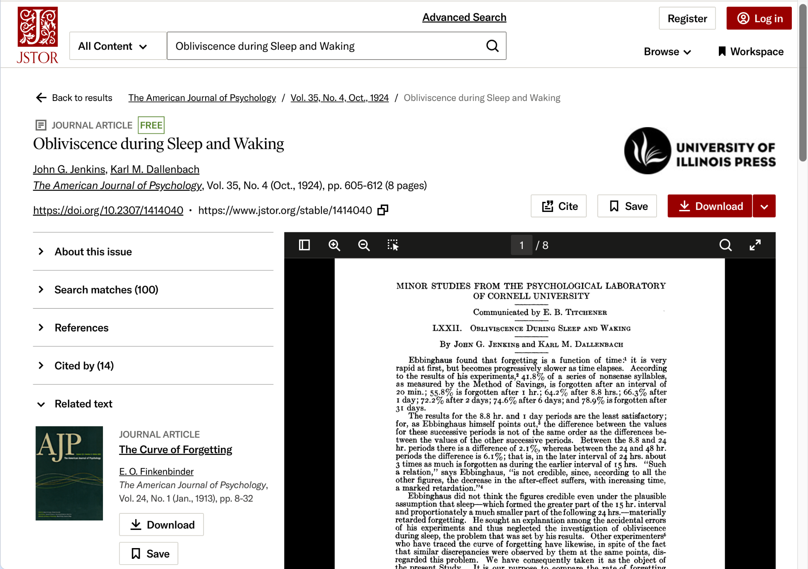

This is a research article from 1924 by John G. Jenkins and Karl M. Dallenbach. The article looks at the relationship between sleep and memory. I chose this object because my group project explores sleep and academic culture, so I was interested in seeing how researchers studied sleep and learning a century ago.
The full digitized article can be viewed through JSTOR.
View the article on JSTOR